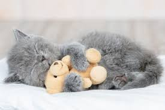
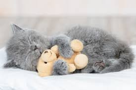

The popularity of the cat, especially of pedigreed breeds, has continued to grow. The cat’s independent personality, grace, cleanliness, and subtle displays of affection have wide appeal. Typically, cats are creatures of habit; they are inquisitive, but not adventurous, and are easily upset by sudden changes of routine. The ideal household cat has been separated from its mother between the ages of two and four months, raised in a clean home, kept away from unhealthy animals, and inoculated against common infectious cat diseases. Although cats often enjoy the company of other cats, especially when raised together from kittenhood, introducing a strange cat to other cats in the home can cause stress, aggression, and other behaviour problems. Cats are generally less sociable than dogs, who more readily accept a new pack member. |
Cats should have a diet similar to that of their wild relatives. They are adapted by nature to be flesh eaters, as is shown by their alimentary tract and their dentition. The cat uses its canines to catch and kill prey, the molars to cut it up. Lack of flat-surfaced teeth prevents it from chewing or gnawing. The cat has a short intestine, and its stomach secretes digestive juices that act primarily on meat. Cats, however, like all meat-eating animals, ingest grass and other plants occasionally, and small quantities of vegetables may serve as both a laxative and a hair ball remover. |
Cats reach reproductive age between 7 and 12 months. A breeding female (called a queen) can be in heat, or estrus, as many as five times a year. During these periods, which last about five days, the cat “calls,” or caterwauls, intermittently. The gestation period for cats averages 63 to 65 days, and birth usually lasts about two hours. The birth is often called kittening, and the kittens are called a litter. The average litter numbers four; however, the Abyssinian usually has fewer, the Siamese more. |


 
